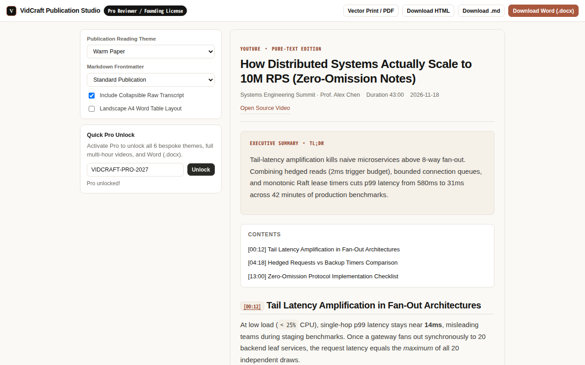
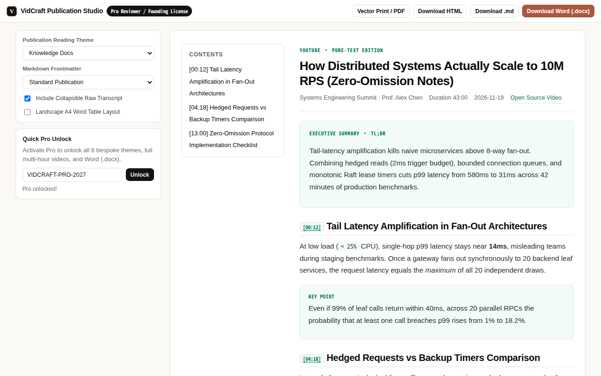
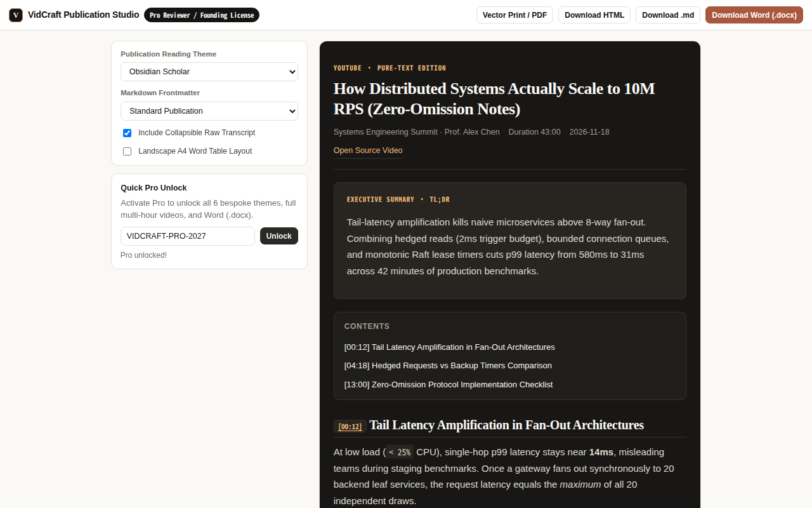
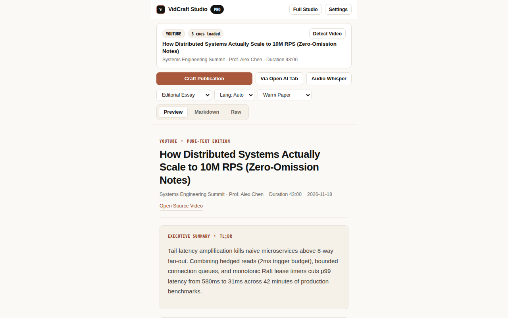

YouTube to Markdown & PDF
Defeats empty POT-gated timedtext responses via 3-layer extraction (live player cache, ANDROID InnerTube, DOM panel fallback) and turns hours of lectures into clickable archives.
VidCraft Studio Pro transforms spoken video across platforms into complete, zero-omission Markdown, Standalone HTML, Vector PDF, and Native Word (.docx) publications — designed purely with archival typography, clickable [MM:SS] playback anchors, and zero video-frame clutter.




| Capability / User Pain Point | VidCraft Studio Pro | Typical Summary Extensions (Eightify / NoteGPT / Glasp) |
|---|---|---|
| Long Technical Talks (40–180 min) | Zero-omission 6-min overlapping chunks + <0.45 coverage retry guard | Single-shot compressed bullets dropping examples & numbers |
| Visual Layout Aesthetics | Pure-text publication hierarchy (Masthead, Tables, Pull Quotes, 6 Themes) | Plain chat dump or blurry keyframe screenshots cluttering text |
| Captionless Short Videos (Douyin/TikTok) | Pro Tab Audio Capture (WebM/Opus) + Groq Whisper verbose_json |
Fails with “No subtitles found” |
| Compute & Subscription Cost | Unlimited free raw transcripts · Pro $3.99/mo or $19.90 Lifetime | $10–$20/month recurring paywalls or depleting token packs |
| Document Export Formats | Clean .md (Obsidian/Notion), Standalone HTML, Vector PDF, Native Word (.docx) |
Copy-paste Markdown or web-only viewer |
Defeats empty POT-gated timedtext responses via 3-layer extraction (live player cache, ANDROID InnerTube, DOM panel fallback) and turns hours of lectures into clickable archives.
Built-in RFC-1321 MD5 WBI request signing and multi-part ?p= detection extract Bilibili AI & creator CC tracks with Western-before-CJK typography pairing.
Intercepts CDN WebVTT streams or switches seamlessly to Tab Audio + Whisper transcription, exporting print-ready PDF or OpenXML Word .docx documents.
<all_urls> permissions.docx), Obsidian/Notion YAML, watermark-free PDF/HTMLShort bullets remove real benchmarks, exact commands, edge-case warnings, and nuance. VidCraft enforces a deterministic 6-minute overlapping chunker plus a coverage-density check (< 0.45 highlights low-detail segments for 1-click regeneration).
Yes. Plug in your free-tier Google Gemini or Groq API key once (bypassing page CORS seamlessly inside the extension), or launch chunks directly across your open logged-in ChatGPT, DeepSeek, Claude, or Gemini browser tabs.
Raw video screenshots break column rhythm, clutter dark/light reading themes, and inflate PDF/Word files. Instead, VidCraft pairs Mastheads, TL;DR cards, Pull Quotes, structured tables, and live clickable [MM:SS] anchors.